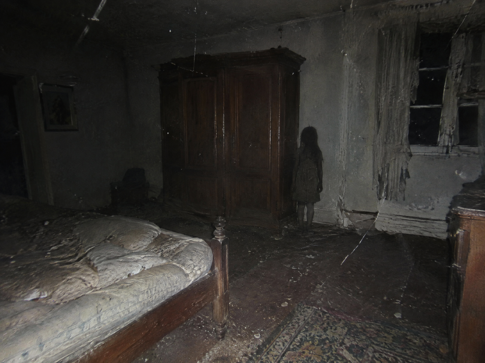

N/03
ملف اتصال غير معروف
نُور
لا تفتح الكاميرا.
هي تعرف أنك تنظر.
تشغيل الهاتف
↗
سماعات الرأس موصى بها · 03:17 ص
03:17
⌁ ▮▮▮ ◉
03:17
الثلاثاء، 17 أكتوبر
رسالة جديدة من
نُور
اسحب للفتح
‹
نُور
متصلة الآن
⌕
نُور تكتب
•••
◉
↑
×
الكاميرا الخلفية
● REC
ϟ
●
▧
نُور
تتصل...
رد
إنهاء
×

تم الحفظ من الكاميرا · 03:18
آخر اتصال
إعادة الليلة